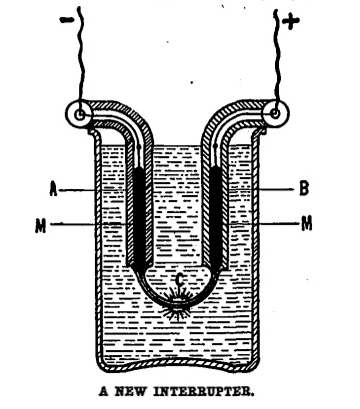

A New Interrupter
Scientific American , July 29, 1905
DRAFT: Please do not share without permission of the author. Typeset versions in web | pdf | doc
Experimenting with different magnetic and electric interrupters, the idea occurred to me that it might be possible to construct an interrupter whose chief functions would be based upon the expansion and contraction of mercury, when heated, by passing a current through it.1
After many fruitless experiments I succeeded in making such an interrupter, and the definite form that proved most satisfactory is explained in the following lines:
A barometric glass tube of about 15 centimeters length, with a central opening of 3 millimeters, is heated in an oxy-hydrogen flame and drawn into the shape, as shown in the accompanying drawing. This is by no means easy, as the tube, C, which represents the main part of the interrupter, must be so attenuated as to leave a capillary bore within, its minute diameter not surpassing 1/8 of a millimeter.

Heat the middle part of the tube over the flame by constantly rolling the ends between three fingers of each hand, till it is red hot and soft. Take the tube quickly out of the flame, and draw it straight out, till it is thin enough; then bend it into the right shape, and let it cool slowly. Of course, these manipulations have to be done quickly, because the glass will not remain soft very long in the open air, and it is nearly impossible to draw the capillary tube when the flame touches it. The tube has to be filled then with chemically-pure mercury, which is easily done by placing the end of the open column, A, in a receptacle containing the quicksilver. By drawing the air out of B, the mercury will quickly mount in A, then pass through C, and rise up in B.2 It is well to only half fill both columns. The apparatus will generally work satisfactorily, when the whole arrangement can be placed in any desired position without the mercury flowing out of it. This is a sign that the capillary tube, C, is sufficiently attenuated.
Two thin platinum wires are introduced into A and B till they dip in the mercury. The apparatus is put into a vessel containing water, which serves to constantly cool C, which part would break in the open air. Connect the two wires with two small storage batteries, and the interrupter will start instantly. In the middle of C there will be a bright bluish-green spark, and a high-pitched tone will emanate from the interrupter, indicating that the interruptions are of high frequency.
I found that this interrupter works most satisfactorily with 4 to 6 volts; it will consume, when made according to directions, from 1/4 to 1/2 ampere, and run as long as desired. By making the part, C, of a larger cross-section, the voltage may be higher and more current will be absorbed, but the interruptions will be very unsteady and irregular, and will very often give out entirely.
The instrument, I believe, cannot be used with high tension currents, as it is too delicate, but it will work satisfactorily in connection with small induction coils, for instance, although a condenser will be required.
The explanation as to how this interrupter works is as follows:
The instant the current is closed, the mercury at the smallest cross-section in C will become so heated that it commences to boil, and the force of the resulting bubbles, falling against each other, will be sufficient to make a momentary rupture in the thin mercury column.3 There will be a little shock, and the expanding quicksilver will rise in A and B. Of course, a vacuum will be created at the place where the rupture occurred; and as the tube is immersed in water, the mercury will stop boiling; it cools instantly, then contracts, and the atmospheric pressure, combined with the weight of the quicksilver columns in A and B, will help to bring the metal in contact again, after which the same play commences as described.
-
This short article was twenty-year-old Gernsback’s first published piece. Written in the concise prose of an electrical engineer, it details his design for an interrupter, a device that repeatedly interrupts a low-voltage power supply and transforms it into higher-voltage pulses. This setup used rising bubbles in a chamber of heated mercury—an electrically conductive liquid, or electrolyte—to interrupt current at a very high frequency. The inaugural issue of Gernsback’s first magazine, Modern Electrics, contains an article on constructing a very similar apparatus. @gernsback_how_1908. Twenty years later, Hugo’s brother Sidney described an updated version of this design using sulfuric acid as the electrolyte in his encyclopedia entry for “electrolytic interrupter.” @gernsback_s._1974, 93-94. ↩
-
The intellectual heritage of mercury as an electrolytic solution is an interesting one, as the method was first produced not in relation to wireless telegraphy and the transmission of audio signals, but during mid-nineteenth century attempts to arrest and quantify the speed of light. Electrochemical discharges like those described by Gernsback were first discovered by Léon Foucault and Hippolyte Fizeau as an accidental byproduct of their 1844 research into the formation of light spectra using various sources of illumination. For more on this discovery, see @wuthrich_electrochemical_2009. Roughly ten years later, Foucault constructed a system of rotating mirrors described by the English inventor Charles Wheatstone to produce the first accurate measurement of the speed of light. For more on Foucault, who began his career as a microscopy assistant, Daguerreotype enthusiast, and conceptualized the problem of measuring light as the “observation of a moving image as a fixed image,” see @canales_tenth_2009, 158-9. ↩
-
The high frequency with which bubbles in the mercury interrupted a current was a method that could in theory replace the slower and more delicate mechanical contacts that were then common, such as an opening and closing magnetic arm. Gernsback’s interrupter was one of many proposed around the turn of the century for use in high current applications such as wireless telegraphy, due to the fact that the high currents necessitated by early spark-gap radio transmitters would often destroy any physical contacts. ↩
Grant Wythoff, editor
grant.wythoff@gmail.com

This work is licensed under a Creative Commons Attribution-NonCommercial-NoDerivatives 4.0 International License.